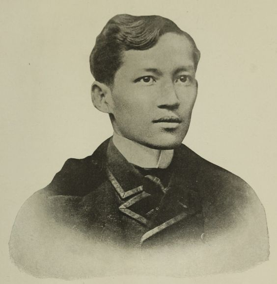

About Jose Rizal
The National Hero of the Philippines and pride of the Malayan Race. He was born on June 19, 1861 in the town of Calamba, Laguna.

He was the seventh child in a family of 11 children (2 boys, 9 girls) of Francisco Mercado Rizal and Teodora Alonzo y Quintos.
Baptized by Rev. Ruffino Collantes at the Catholic of Calamba with Rev. Pedro Casanas as sponsor on June 22, 1861.
Childhood
1864-1865 Rizal learned the alphabet from his mother at the age of three. However, his sister Conception, the eighth child in the family died at the age of three when Rizal was four years old. He remembered himself having shed real tears for the first time.
1865 His mother taught him how to read and write, while his father hired Leon Monroy to teach Rizal the rudiments of Latin.
1868 Rizal made a pilgrimage to Antipolo with his father to fulfill the vow of his mother to take the child to the Shrine of the Virgin of Antipolo.
They proceeded to Manila and visited his sister Saturnina who was at the time studying in the La Concordia College in Sta. Ana.
1869 At the age of eight, Rizal wrote his first poem entitled “Sa Aking Mga Kabata.” The poem was written in tagalog and had for its theme “Love of One’s Language.”